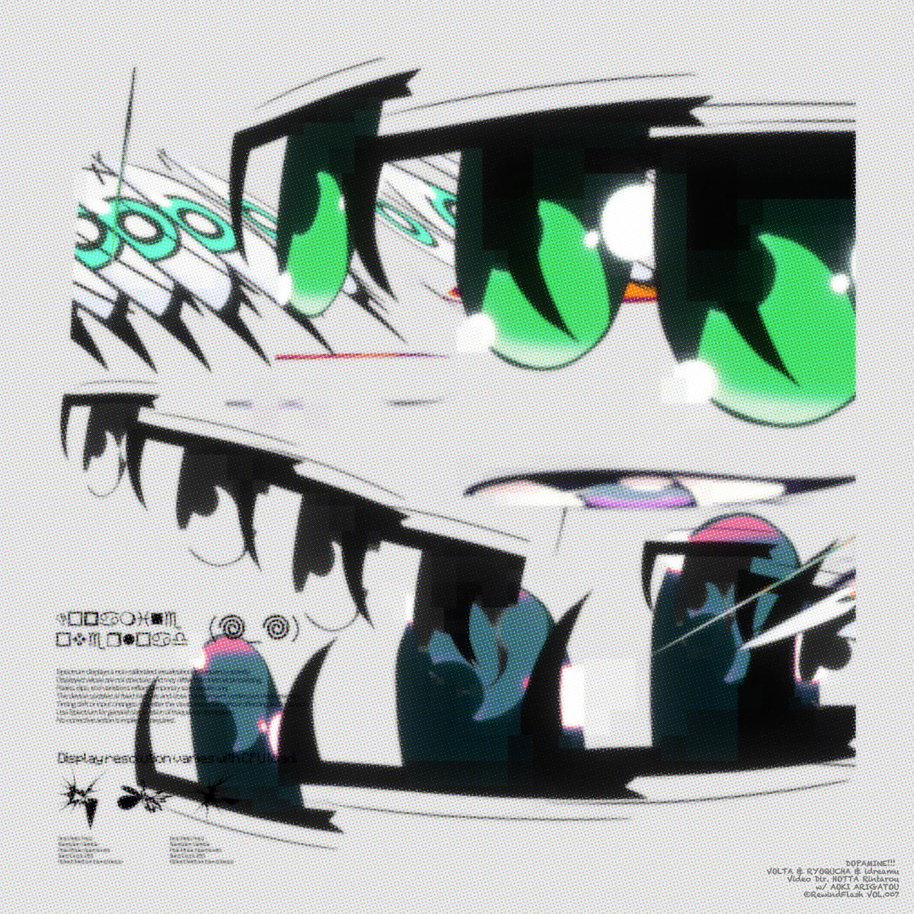
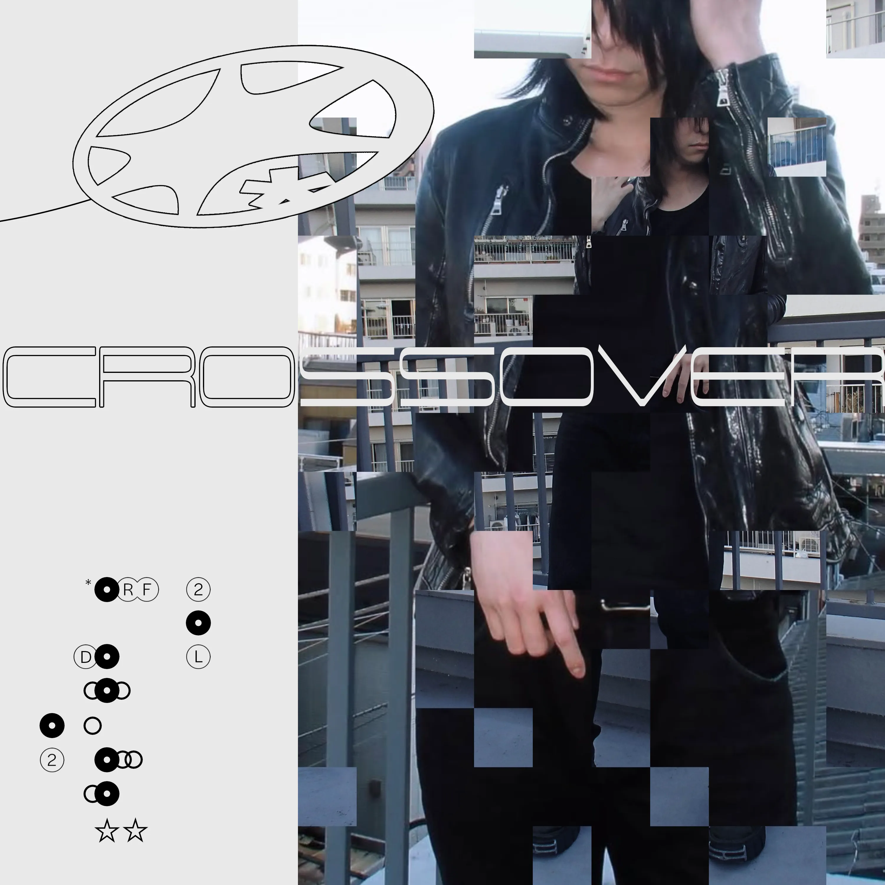
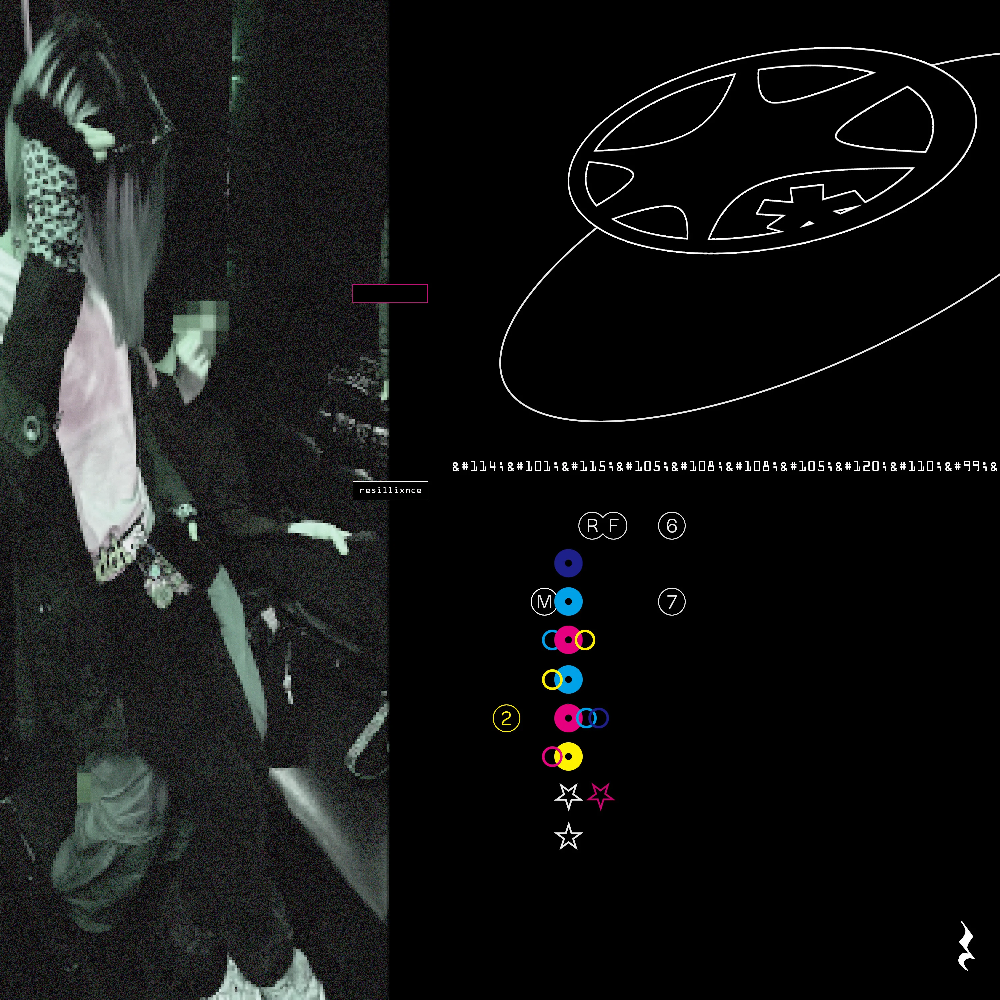
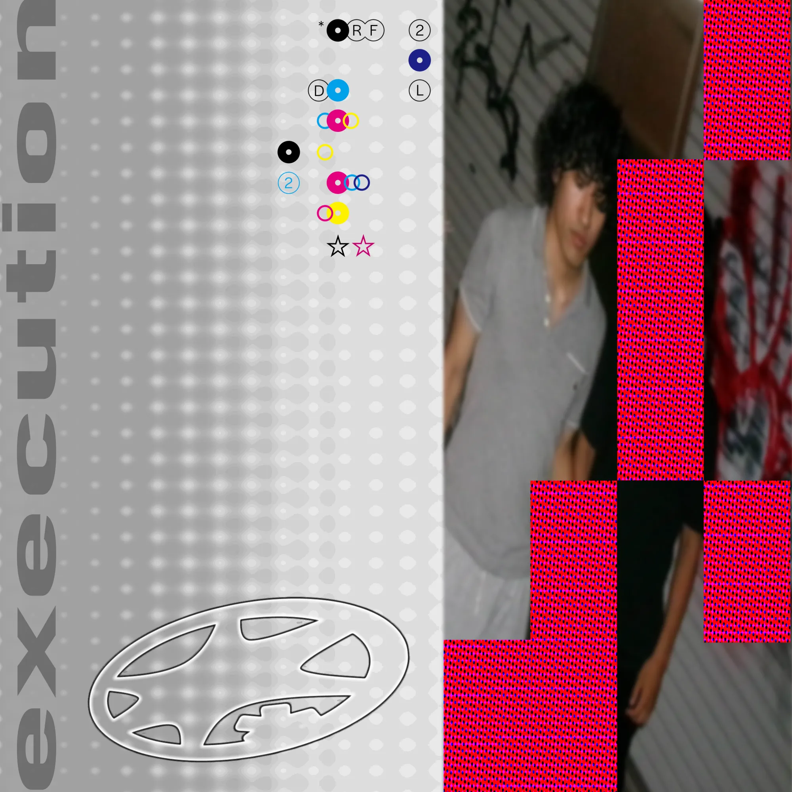
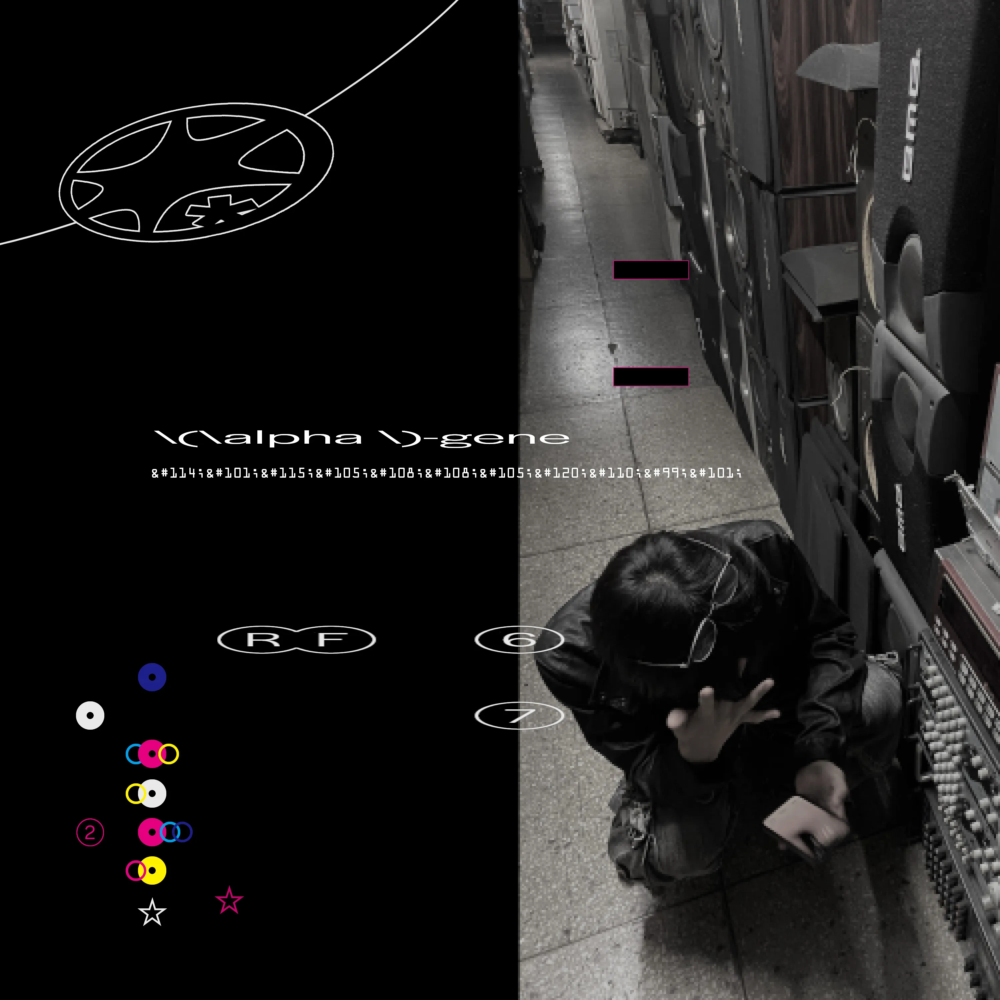
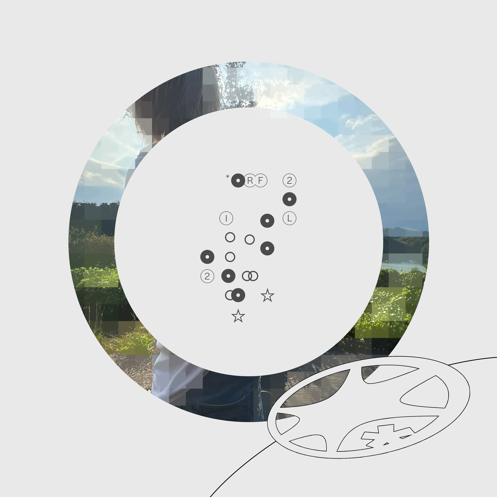
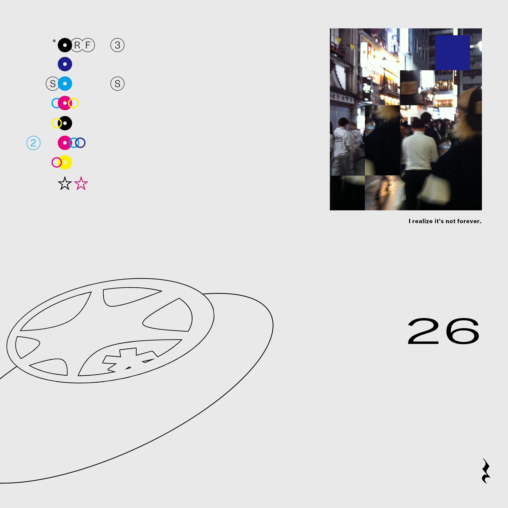
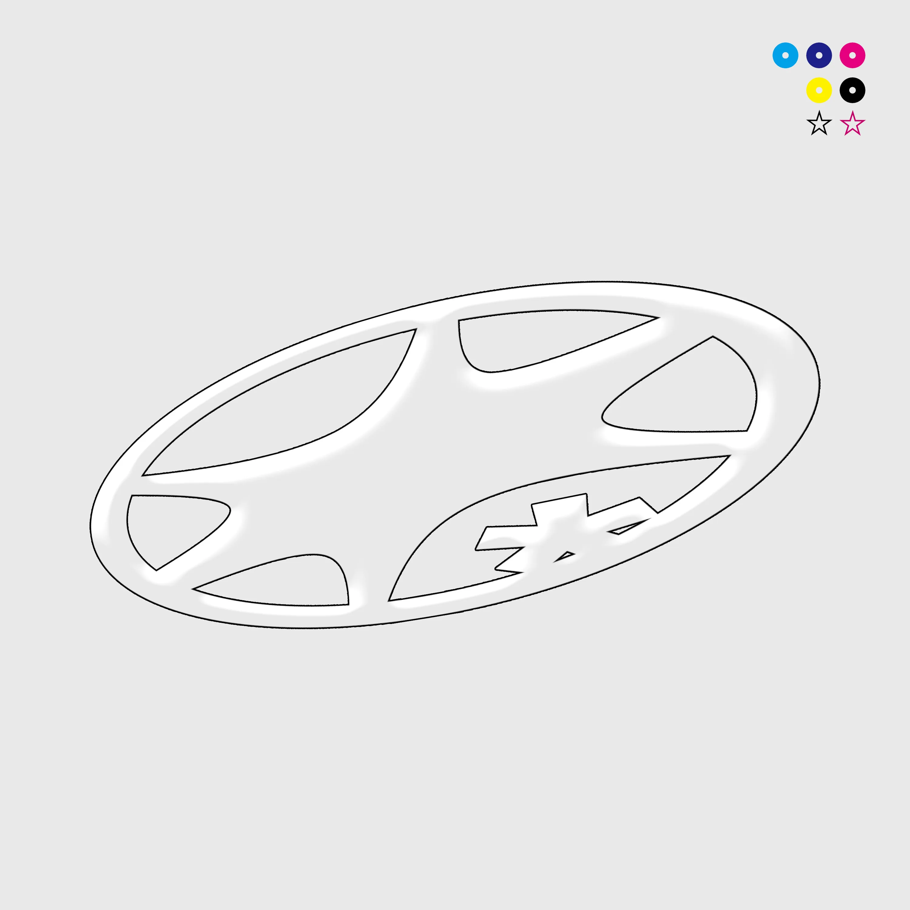

DOPAMINE!!!
crossover
resillixnce
execution
α-gene
Purple
LUVMYSELF
RESETT
26
また、繰り返す。
DOPAMINE!!!

01
VOLTA RYOQUCHA idreamu
idreamu
VOLTA RYOQUCHA idreamu
idreamu
- LYRICS -
digging into my hyper side
倍やんなきゃ追いつけない
倍どころの騒ぎじゃねえ！
working on working on(𖦹𖦹)
非日常に馳せる思考
握ったのはここから抜け出すための道具
Everything i brought here is this song
Dreaming now, even if world falls apart
every moment
証明するのは生きてること、他にもない
I got my cool mates☆
自慢しちゃうよなそりゃ
play it louder!!
しがらみ掻き消す音が鳴る umm..
And what is left after letting go is my shield (･д[
消えないlighterを求めてる
また一秒を焦がしてく in the time
In a flash︎︎⟡
Neon lights hiding my tears
都会の喧騒 わたしを燃やす
痕を辿る過去
Look at my spark in my eyes
片鱗は唸ってる
それはずっと明白だってI know
安泰頂戴☆願っても
貰った今を愛せるよう
Beating in unison now
同期してくvibe を
安泰頂戴☆願っても
貰った今も愛せるから
シンクロする夢と音の中
Neon lights hiding my tears
都会の喧騒、わたしを燃やす
痕を辿る過去
ook at my spark in my eyes
片鱗は唸ってる それはずっと明白だってI know
Dopamine overloadしてる間
リミットない
コンプレックス変えてく武器にჱ̒^> ·̫ <^
四面楚歌でも平気
(cuz you got me!)
フィルターなしでjump in
リアリティ★
Dopamine overload
Neon lights hiding my tears
都会の喧騒 わたしを燃やす
痕を辿る過去
Look at my spark in my eyes
片鱗は唸ってる
それはずっと明白だってI know
それはずっと明白だってI know
crossover

02
icesawder levi
levi
icesawder levi
levi
- LYRICS -
オレのMusicはLove and Hate
覚えとけ
走るTOKIO CITY TO CITY
超えRevenge
All eyes on me
あいつらはわかっていない
街、オレはstay tune
28とだべってるstation
ダッサいイベンター、タイテはえーよ
実力ないのに
売れてるあいつの
スカした態度が
気に食わない
これは自戒だし
まだ足りないから
26話
まだ死にたくない
Jesus Christ
歪んだ世界
I need cry
Still fight
こんくらいeasy
お前暇なのおれは暇じゃない
なんでもかんでも入れるバッグ
とあればあるだけよかったビート
少しずつ良くなってきた生活の
反対に、隠れている本題は
2026
オレらはどう生きる？
投げられた賽と
引かれたライン
益城、空港線
変わってく地図
出かけてくるちょっと
遠くの街
オレのMusicはLove and Hate
覚えとけ
resillixnce

03
VOLTA Dairou Tanaka icesawderLetsu LynxXxCERO:A
Letsu LynxXxCERO:A
VOLTA Dairou Tanaka icesawderLetsu LynxXxCERO:A
Letsu LynxXxCERO:A
- LYRICS -
girl, you test me?
girl, you test- ughhh
何で示せばいい？
「君らしく」なんて言われも未解
街じゃコンクリ色の服で擬態
カメレオンみたいに落ち着かない eyes
隠すために下げるhood 前が見えない
クラブの端でdown ここに居場所はない
俺とletsuでアゲるbooth
she said お前じゃ足りないって
buggin now, buggin now
クラブの端でdown
どうなったって構わないさこんな人生は
灰色のjungleで息を潜める
ignition ayy
止めれないよ俺らの足は素早い
抜けれないよこの躁鬱は一体何
お前に構ってる暇は今は一切ない
異彩放つ俺らのやり方
2倍吸ってるIma in my stu
お前は石でも俺の意思はダイヤツール
日々swipeする 積む弾幕
早すぎるぜ俺らの音楽
like hallucinations
is the way you move proper
1 to 6th my sence is activation
ついて来れないこのmove yo
lcaに任せてラップの出張
L to the L 追い抜かしたその身長
まあ別にいいか持つ広い心
Back to the Ace 決める硬いシュート
つま先からケツまで用意周到
execution

04
Dairou Tanaka Letsu
safmusic swetty
VOLTA safmusic swetty
safmusic swetty
- LYRICS -
ABC並べるだけいい感じ
let me free gonna make ya brand new shit
追い求め続けるmasterpiece
そのため歩いてる長旅
良い感じ Ima chasin masterpiece huh 日々Tasting
お前には出せないこの輝き
その瞬きは今は厳禁
日々詰め込む情報膨大な容量
no譲歩 自分で考える構想
昼間ウトウトだが夜だけは暴走
追い求める真実これが本能
yo hold on make some noise ohh
俺にはお前らの声が必要
必勝法はないがただやるだけ
俺毎日生み出してるカッケーもん
ABC並べるだけいい感じ
let me free gonna make ya brand new shit
追い求め続けるmasterpiece
そのため歩いてる長旅
良い感じ Ima chasin masterpiece huh 日々Tasting
お前には出せないこの輝き
その瞬きは今は厳禁
休む暇ないから俺には要らないオアシス
響くDairouTanakaのBass
誰がどうこうとか興味ない
昔は囚われてた数字
今はやりたいことやって立つステージ
(間奏 アドリブ)
まだ上がり足りない体温
どこまで君は行きたいの
yuh とか言って俺 I know
degree the place you wanna go
いつまでも他人のせいで
それで満足お前の人生
不規則に響くシンセ
LetsuとTanaka超新星
Yo I know that we are insane
お前にできないこの真似
Someone calls my name
L.E.T.S.U. 俺はLetsu of RewindFlash
輝いてるcamouflage
Call RewindFlash
叫べRewindFlash
We going back to the basic hold on
Ima stack money 上がってる動向
夜中頑なに開いてる瞳孔
他人の声を遮って行動するだけで稼ぐんだmoney
見える景色俺は1人
その横には仲間達
α-gene

05
VOLTA Letsu
Letsu
VOLTA Letsu
Letsu
- LYRICS -
α gene activated
all time I gettin hype
刺激が足りない
go shawty hit me up
Lets keep in touch anytime
取り込まれた遺伝子
呼び覚まされ向かうstage
誰が為に俺の足は動く
宛てもなく何処へ向かふ
what I touch ya
what I see what I hear what I experienced remains in my head
Where you are now Ive been tryna finding you 未だ彷徨い続ける
Someone tell me ya I dont know why though I just know you are alone
be myside girl ya babe 痛みも麻痺させている I told u that これは危険物
味見をしたら最後だ
LET'S TURNING VOLTAGE UP
ALPHA GENE ACTIVATED
Purple
06
VOLTA Letsu
Letsu
VOLTA Letsu
Letsu
- LYRICS -
散り行く儚い脳内
I’m spending all night alone
解けない issues
I see u ain’t fine 思えないよその態度
物足りないその不気味な愛情を show me
Let me know rightなんでも構わない
想いは褪せる日々を重ねてく中で
嘘だけでも夢見せてよ
U make me idiot
Wanna be your Romeo
募る不安のフェーダー
俺だけ it’s not fair
募る不安のフェーダー
俺だけ it’s not fair
悴むこの手は向かう何処へは
わからないけど具体じゃない
形はないからまだ埋まらない
このミステリーを俺は解き明かしたい
右も左も今はわからない
Feeling sympathy okay 理解したつもり
今はわからない
何度もうっせーな朝
食べ尽くしたいんだ
悩めど same matter
嫌なことはないな
I’m loving it your laughter
だけどちょっとNervous
Kinda stereo na
Babe just just wanna
だけどちょっとな続きを言うには
懐かしい思い出は今も残せてるのかな
マジだるいよ噛んでも味のしないガムのような
全て満ちたと感じるにはまだ早いよな
Looking for what i used to know
溶けて消えてく like snow
Don’t need yo fucking hoe I’m silly i know
黙れよ言われなくても
2人だけの純粋な愛で跳ね除ける余計なもん
終わりは知らないいつまで？
気にしなくていい今日だけ
未計画でローンはない
一括で時間溶かすぜー
向かう何処へ分からない？
けど嫌いじゃない
形はないからまだ埋まらない
悴むこの手は
(生きるとは笑い泣いて綺麗事を自分に言い聞かせては相槌を打ち眠いを目擦り陽を浴びてく毎日だ)
LUVMYSELF

07
icesawder Letsu
Letsu
icesawder Letsu
Letsu
- LYRICS -
(俺らは)
そうして羽ばたいてく
悩みまたもがいて
壊してまた再生
革命起こす回転
泣いてもしょうがないね
それでも泣いてる
それもまた人生
そうして羽ばたいてく
殺してくれmy bae
囁いてる in my bed
どうしようもないことが大抵
それが俺を狂わせる
1人でまた反省
ああすれば良かったって
後悔なんて最低
そう思ったりしてみてる
人は誰しも抱く淡い希望
I don’t know why tho
それが絶望だとしていても
変わらないよ That is all I want
新たに何かを得るため行動を繰り返す
失うものは知らねえ
俺らはやるしかない
この足はまだついてる
たまにはつまづいて
けどそれは糧になる
そう信じて
RESETT

08
VOLTA ariiol yeil
yeil
VOLTA ariiol yeil
yeil
- LYRICS -
되돌아가려고
하기만 하지 넌
shawty, 어서 back
you can’t touch my shit
I get it on my nut
할 일이 너무 많아
I can’t, ooh my god
넌 나 말곤 없잖어
あの時ね
見た夢で
난 또 고민해
되돌아가려고
하기만 하지 넌
shawty, 어서 back
you can’t touch my shit
I get it on my nut
할 일이 너무 많아
I can’t, ooh my god
넌 나 말곤 없잖어
あの時ね
見た夢で
난 또 고민해
되돌아가려고
하기만 하지 넌
shawty, 어서 back
you can’t touch my shit
I get it on my nut
할 일이 너무 많아
I can’t, ooh my god
넌 나 말곤 없잖어
あの時ね
見た夢で
난 또 고민해
あなたと 君と
なぜ？ ねぇ、とか。
우린 이제 못 돌아가
26

09
VOLTA safmusic swetty
safmusic swetty
VOLTA safmusic swetty
safmusic swetty
- LYRICS -
オレのMusicはLove and Hate
覚えとけ
走るTOKIO CITY TO CITY
超えRevenge
All eyes on me
あいつらはわかっていない
街、オレはstay tune
28とだべってるstation
ダッサいイベンター、タイテはえーよ
実力ないのに
売れてるあいつの
スカした態度が
気に食わない
これは自戒だし
まだ足りないから
26話
まだ死にたくない
Jesus Christ
歪んだ世界
I need cry
Still fight
こんくらいeasy
お前暇なのおれは暇じゃない
なんでもかんでも入れるバッグ
とあればあるだけよかったビート
少しずつ良くなってきた生活の
反対に、隠れている本題は
2026
オレらはどう生きる？
投げられた賽と
引かれたライン
益城、空港線
変わってく地図
出かけてくるちょっと
遠くの街
オレのMusicはLove and Hate
覚えとけ
また、繰り返す。

10
Mylta
Letsu ねんね
Mylta
Letsu
- LYRICS -
重なる思いが
some noises got my feeling and what i thought gone off
まだ逃げ道はない状況
迸る焦燥
一度きりただ知りたいの
胸の奥響くあの愛を
変わらずまた叫びたい
一度きりの愛を
どうてもいいことばかりがnoise
押せばいいってもんじゃないよ坊主
go fader down and go soft,slow huh
You don’t even know what’s going on
縺れて甘く漂うnoise
月明かりの下、ため息をとかす
All I need is love? 探してる途中
how about you?
whole night また迷い込むyou and I yuh
また繰り返す